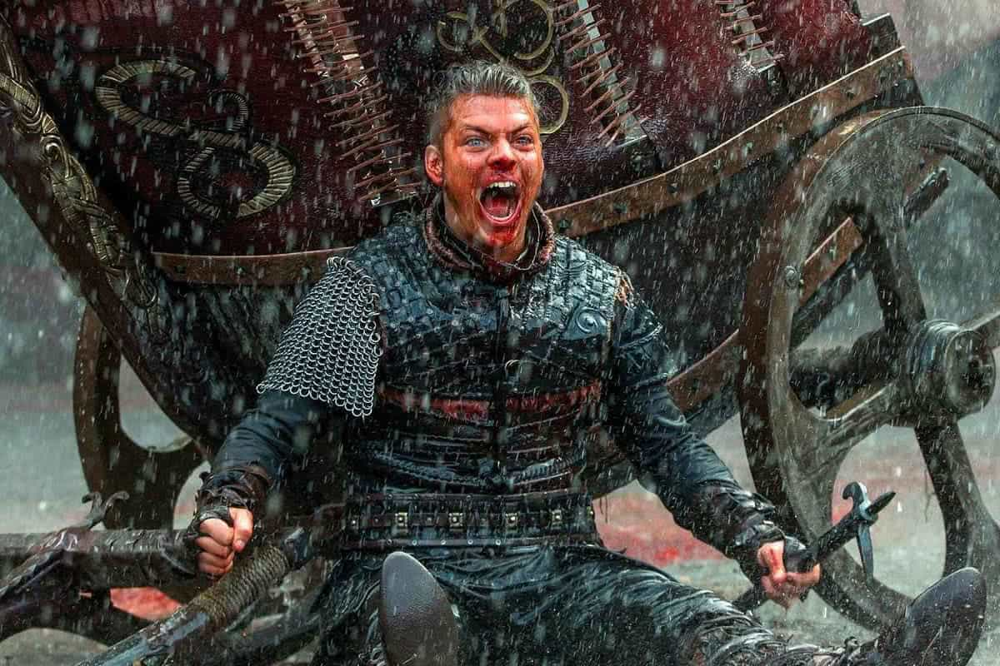
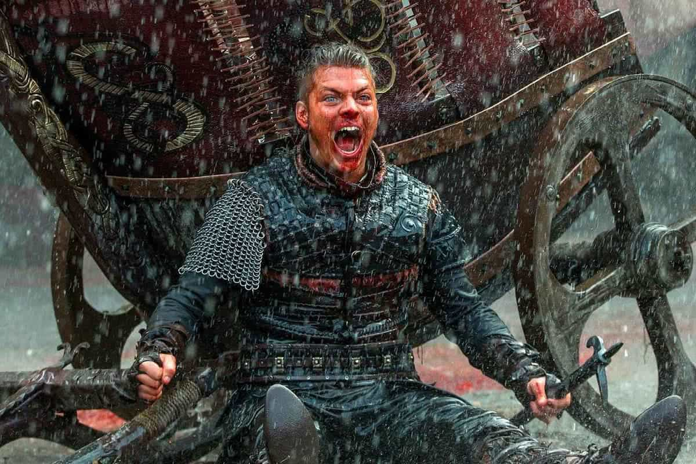

Vikings
A série histórica criada por Michael Hirst, em 2013, acompanha a vida de Ragnar Lothbrok desde suas origens humildes como fazendeiro até se tornar rei e um dos mais lendários guerreiros nórdicos. A trama explora a cultura e mitologia viking, expedições de conquistas e explorações, intrigas políticas e guerra.
Ragnar Lothbrock
Protagonista da série é um guerreiro destemido, estrategista e explorador visionário, o que o diferencia de outros líderes vikings de sua época. Ao longo da série, Ragnar enfrenta dilemas morais, traições e perdas pessoais, mas sua determinação e habilidade em batalha o estabelecem como uma lenda entre os vikings.
Lagertha
Primeira esposa de Ragnar Lothbrok, a personagem é uma guerreira feroz e líder respeitada. Ascende ao poder, tornando-se uma figura influente e temida, tanto como líder militar quanto como governante.
Bjorn
Filho mais velho de Ragnar Lothbrok e Lagertha, se revela um líder formidável, conhecido por sua força física, habilidade em combate e inteligência estratégica. Bjorn também lida com dilemas morais e políticos ao tentar equilibrar o legado de seu pai com suas próprias ambições.
Ivar
Filho de Ragnar Lothbrok, Ivar nasceu com uma condição que o deixou com as pernas paralisadas, ganhando o apelido "o Desossado". Sua complexa relação com seus irmãos e sua busca obsessiva por poder e reconhecimento fazem dele um personagem memorável.
Rei Ecbert
Rei de Wessex, na Inglaterra, Ecbert é um líder inteligente, ambicioso e calculista. Sua relação com Ragnar é complexa e multifacetada. Baseada em interesses comuns, essa relação é marcada também por manipulação, à medida que ambos procuram utilizar o outro para alcançar seus próprios objetivos.